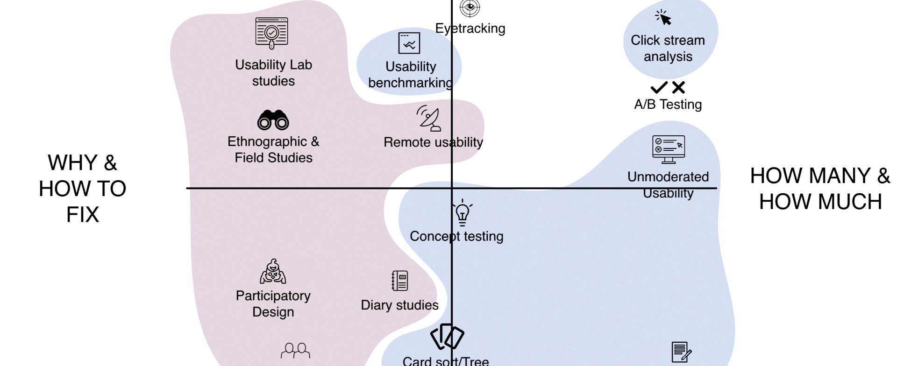

James Taylorson
Hello 👋
I'm James, a user researcher with a technical and delivery background.
Having spent the early part of my career managing digital delivery teams agency‑side, I made a switch to user research in an effort to get back to doing what I love: striving to understand what makes people tick.
I design and lead programmes of research, from large scale global formative studies that uncover un-met needs, to rapid evaluative research that aims to surface insights fast.
If you'd like to know more about my background and experience, or just want to connect over coffee, I'd love to hear from you!
Case studies
Delivering a Post Brexit application for 3.7m EU citizens

The Project
In 2016, the UK marginally voted to leave the EU, ending 25 years of free movement between members of the UK and EU states. This meant that all EU citizens who intend to live in the UK indefinitely, need to apply to do so under a scheme known as 'settled status'. Since May 2018, I have been part of a project team at The Home Office, tasked with delivering a clear and simple service that enables 3.7 million EU citizens living in the UK to apply to remain indefinitely.

My role
As a cross‑functional team we are responsible for designing a service that meets the universal needs of our users. Part of my role is to ensure that our design decisions are validated with a broad base of users, including those from vulnerable cohorts, those who struggle with technology, and those with access needs. The team have to be adaptable to ever‑evolving business and policy requirements, as well as ensuring we meet the UK government's digital service standard.
The Outcome
A beta phase rolled out to 30k applicants showed positive results, with most relieved at how easy the application process was to complete (in large part due to a mental model of government forms being burdensome). However at the point of leaving the project, deeper user insight was needed to ensure some of the language was better understood, particularly by those with lower levels of English.
Defining a research strategy to deliver faster and more effective insights

The Project
When I first arrived at New Look, the team were conducting forms of research that were heavily geared towards quant methods, driven by a belief that numbers needed to be big in order to be believed. I knew this was not only a limiting approach, but also a dangerous one due to the results of inappropriate methods being used to justify big design decisions.
My role
I put together a succinct pack and presented it to the leadership team, outlining how our research budget could be invested in a more effective and cost efficient way by moving away from an expensive investment in a single tool, to a suite of tools that
The Outcome
My proposal was well received and signed off by the leadership team, giving us a broader toolkit of qualitative and quantitative methods. This enabled us to answer not just what users do, but why they behave the way they do, as well as delivering faster feedback loops, and a far greater return on investment.
Helping Amazon export their prime processes

The Project
Amazon approached GfK to help test a new solution they had developed that enabled their Prime sellers to leverage Amazon's world class operational processes. The goal was to empower the Prime partners to be faster and more efficient when fulfilling orders, which in turn helped ensure they met Amazon's 'Prime Promise' of one day delivery.

My role
I designed and lead a study that involved spending three hours with eight different prime sellers in their warehouses throughout the UK. The main objectives of the research were to 1) understand the seller's existing processes using methods such as task analysis, and 2) validate an early stage prototype developed by Amazon's design team.
The Outcome
The first round of research uncovered some major flaws in Amazon’s design. We fed back to the team in Seattle and using the insights we had uncovered, along with out recommendations, they iterated their design and commissioned a second study to further validate their tool with sellers in the UK.
Helping bring mobile payments to India
The Project
In late 2016, the Prime Minister of India announced the demonetisation of two of the nation's bank notes in an effort to eradicate counterfeit money, and drive adoption of mobile payments. Visa had been developing a mobile payments service for the region called mVisa, and needed to quickly validate their designs with users on the ground.
My role
To get the team's designs validated fast, a colleague and I designed a study that included four days of RITE usability testing in a lab in Mumbai (India) and one day of in-context usability testing with various shop keepers at their premises in Mumbai.
The Outcome
By the end of the week, the mVisa design team who were present in the sessions, had significantly moved the design along and challenged some key design assumptions. A final report was delivered alongside a highlight reel of the sessions.
Education
UX Design Immersive Program
Sociology BSC
Tools & Skills
Research methods: Formative and evaluative methods, in‑person and remote usability testing, accessibility testing, RITE testing, task analysis, card sorting
Research tools: Lookback, Validately, UserZoom, Whatusersdo, Hotjar, RealtimeBoard
Design & prototyping: Sketch & Adobe CS, Pen + paper, Marvel, InVision, Principle
Code: HTML5, CSS3 (and a bit of JS)
When not at work
...I try to keep myself busy.
My wife and I built a greenhouse in our garden, and hosted supper clubs and various events for foodies and the local community.
I also run a monthly 'culture club' for a group of friends where each month one person picks a cultural activity that we wouldn't normally go to, with a view to getting everyone out of their comfort zone a little.
I have been a snow fanatic in the past, often riding the 3am OVRide snow bus from New York to Vermont for day trips.
In the last couple of years I've hopelessly fallen for our local football (sorry ehem soccer) team Leyton Orient, so I follow them as they scrap it out in the lower leagues of the English game.
I share a home with three animals – one with hair and two without – so they tend to keep me on my toes.